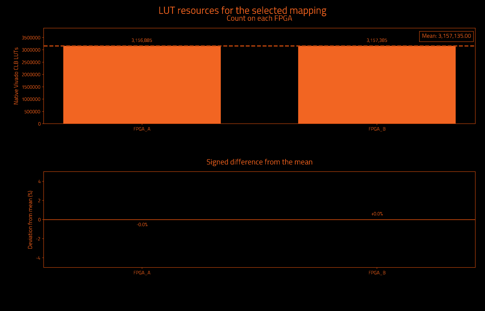
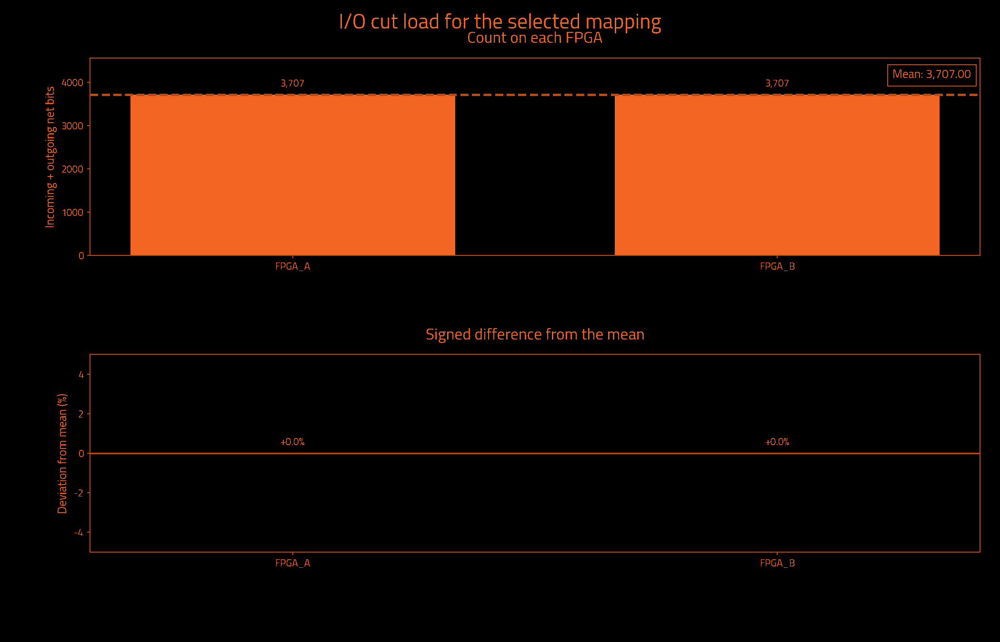
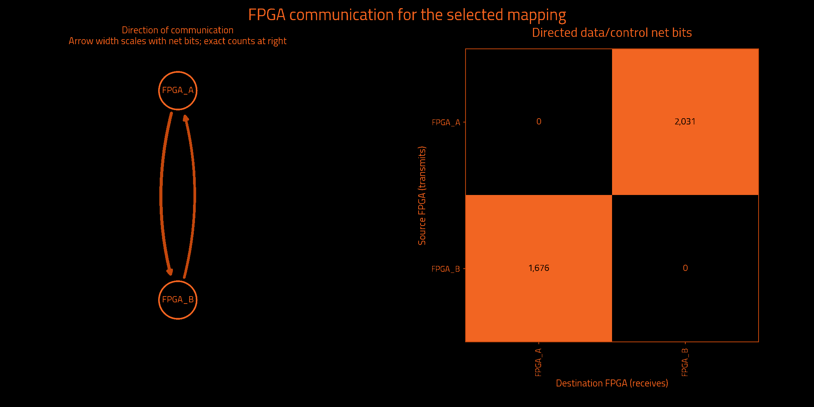

Historical measurements preserved by exact ownership equivalence · mapping.txt
Historical metrics preserved by exact ownership equivalence; not a fresh Vivado measurement.
| Selected partition | Result | Search | Result |
|---|---|---|---|
| FPGAs | 2 | Iterations requested | Unavailable |
| Native Vivado CLB LUTs | 6,314,270 | Iterations attempted | 1 |
| Unique data/control cut net bits | 3,707 | Selected iteration (zero-based) | 0 |
| Directed data/control net-bit pairs | 3,707 | Target board | j4.phd |
| Measurement | Result | Measurement | Result |
|---|---|---|---|
| Wall time | Unavailable | Observed CPU time | Unavailable |
| Average CPU cores | Unavailable | Average CPU use (one core = 100%) | Unavailable |
| Peak sampled process-tree memory | Unavailable | Frontend peak memory | Unavailable |
| Child processes observed | Unavailable | Sampling interval | Unavailable |
Measured through: Unavailable. CPU covers the frontend and observed descendants; sampling can miss short-lived work. Process-tree memory sums may count shared pages more than once.
No runtime measurement supplied.
Observed CPU time is a lower bound when short-lived processes escape sampling. Windows-host sampling excludes work inside WSL. Process-tree memory sums may count shared pages more than once.
| Logical FPGA | Native Vivado CLB LUTs | Device LUT utilization | Hard LUT cap | Outgoing net bits | Incoming net bits | Total I/O net bits |
|---|---|---|---|---|---|---|
| FPGA_A | 3,156,885 | 37.314% | 6,345,216 | 2,031 | 1,676 | 3,707 |
| FPGA_B | 3,157,385 | 37.320% | 6,345,216 | 1,676 | 2,031 | 3,707 |
| Logical FPGA | Target device | Registers | Block RAM tiles | DSP blocks | UltraRAM blocks |
|---|---|---|---|---|---|
| FPGA_A | xcvp1902 | 1,894,764 | 792.0 | 0 | 0 |
| FPGA_B | xcvp1902 | 1,894,900 | 792.0 | 2 | 0 |



| Measurement | Before local cleanup | Selected result |
|---|---|---|
| Worst minimum physical link hops without a register | 1 | 1 |
| Worst FPGA boundary crossings without a register | 1 | 1 |
| Extra crossings summed over modeled endpoints | 0 | 0 |
| Combinational primitives on transit paths | 0 | 0 |
| Directed hypergraph transfers | 3,663 | 3,663 |
| Sampled source timing paths scored | Unavailable | 1,000 |
| Weighted cost on sampled source timing paths | 0.0 | 0.0 |
| Signal category | Unique crossing net bits | Directed net-bit pairs |
|---|---|---|
| Data and functional synchronous control | 3,707 | 3,707 |
| Clock only | 1 | 1 |
| Reset only | 7 | 7 |
| Iteration | Result | Worst register-free crossings | Extra endpoint crossings | Transit primitives | Hypergraph transfers | Utilization imbalance |
|---|---|---|---|---|---|---|
| 0 | Selected best accepted mapping | 1 | 0 | 0 | 3,663 | 0.01% |
| Measurement | Meaning |
|---|---|
| Worst minimum physical link hops without a register | Lower bound from the declared topology, not a routed transport path. |
| Worst FPGA boundary crossings without a register | Largest ownership-change count on a modeled combinational path. |
| Extra crossings summed over modeled endpoints | Crossings beyond the first, summed over endpoints; not a distinct-net count. |
| Combinational primitives on transit paths | Logic that receives and forwards a remote signal without register capture. |
| Directed hypergraph transfers | Destination partitions beyond the first, summed over modeled hyperedges. |
| Sampled source timing paths scored | Exported Vivado timing samples, not all-path timing closure. |
| Weighted cost on sampled source timing paths | Relative ranking cost, not measured transport delay or DUT frequency. |
I/O cut load counts one outgoing multicast net once at its source and once at each receiving FPGA. Clock-only and reset-only nets are separate. Counts describe logical payload, not physical package pins or a pinmux ratio. External top-level ports have no invented FPGA home. Hypergraph transfers differ from the full net-bit census.
Deviation is 100 × (FPGA count / mean − 1); all-zero designs have 0% deviation. Device utilization and hard LUT caps are separate. Before local cleanup means this selected candidate before refinement, not necessarily the first iteration. More iterations can improve a result; the best accepted candidate is retained.
Timing sample coverage: exported sampled native setup paths only; not all-path STA. Path model: primitive conservative data arcs; top IO has no FPGA home. These are source-model measurements, not achieved hardware timing.
| Logical FPGA | Physical location | Selected direct neighbors |
|---|---|---|
| FPGA_A | C01/S01/E | 1 |
| FPGA_B | C01/S01/F | 1 |
| FPGA | Neighbor | Declared lanes | Wires at topology minimum compression |
|---|---|---|---|
| FPGA_A | FPGA_B | 16 | 1,024 |
The communication matrix shows signal demand. Declared links guide optimization; transport routing and physical bandwidth allocation happen later.
Resources describe original synthesized logic; future wrapper and transport resources are excluded. Mapping format, ownership and hard capacity checks are acceptance gates. Downstream regroup and hardware validation are separate.
{
"status": "HISTORICAL_METRICS_PRESERVED_BY_EXACT_OWNERSHIP_EQUIVALENCE",
"backend_version": "1.6.2",
"partition_preset_requested": "default",
"frontend_sha256": "d4dd69ef7849e0e5770e1ea0173f2106b1f1ec13ccc9303f7e8eaf9f3bc7237c",
"native_timeout_seconds": 7200.0,
"native_timeout_scope": "persistent checkpoint startup and each resource request; batch commands unaffected",
"topology_sha256": "81cbe6e83afb0c4b396c376a11ce80bc5e221d12b6c8992712e00efac17c3704",
"topology_source_sha256": "6f393e7eee76cbf20cd96e46f52c8c0a34be2365c7222aa6cf7abfe87c7e1b83",
"fpga_count": 2,
"native_backend_invoked": true,
"preferred_native_balance": 0.2,
"selection_policy_version": 3,
"native_balance_absolute_tolerance": 1e-12,
"effective_solver_epsilon": 0.3,
"effective_refiner_scalar_balance": 0.3,
"native_balance_search_envelope": 0.3,
"target_capacity_dependency_manifest_sha256": "18a3ac71857350176b8d15449e6cf21f106a9c902bd439a5a7d9d722c218d2c3",
"target_capacity_dependencies_sha256": {
"C:\\Users\\Wrelks\\Desktop\\upgrade_partitioner_handle_large_designs\\RapidWright\\scripts\\partition\\target_capacity.py": "652db231c4c19cfb2aa7bea140c1184d6f51162be857358b94152b3a2661f992",
"C:\\Users\\Wrelks\\Desktop\\upgrade_partitioner_handle_large_designs\\topologies\\j4_board_topology.json": "6f393e7eee76cbf20cd96e46f52c8c0a34be2365c7222aa6cf7abfe87c7e1b83",
"C:\\Users\\Wrelks\\Desktop\\upgrade_partitioner_handle_large_designs\\topologies\\j4_board_topology.json.targets.json": "25db82ebe61166d1d1998042eaa07ad9c843238119e5dd6e16e70695249afcd4",
"C:\\Users\\Wrelks\\Desktop\\upgrade_partitioner_handle_large_designs\\RapidWright\\scripts\\partition\\part_catalog\\vivado_2025_1_parts.tsv": "a402de944fbd660743f6a7ff12403060e886627439826186600da78618e6a1fe",
"C:\\Users\\Wrelks\\Desktop\\upgrade_partitioner_handle_large_designs\\RapidWright\\scripts\\partition\\part_catalog\\vivado_2025_1_parts.tsv.identity.json": "c5937f61bb02a289745eee9e8cc359b56692ed908e206cf549830da035957707"
},
"effective_logical_balance": 0.5,
"logical_balance_policy": "automatic_uniform_or_unspecified_native_caps",
"logical_balance_requested": null,
"logical_resource_capacities_explicit": false,
"engine_manifest_sha256": "b64272b8c469cffdf98ea76b1afcae5799a0fa0bc63d855ece820af18d841f8a",
"source_pair_association": {
"version": 1,
"mode": "supplied_manifest_legacy",
"original_receipt": "C:\\Users\\Wrelks\\Desktop\\upgrade_partitioner_handle_large_designs\\LSUT_2\\work\\partition_experiment\\picorv32_mesh_3072_reference\\export_receipt.json",
"receipt_snapshot": "C:\\Users\\Wrelks\\Desktop\\upgrade_partitioner_handle_large_designs\\work\\final_j4_matrix_controller_v3\\evidence\\RISCV_MESH_3072_k2\\installed_serial_default_20261014_072f50e1\\inputs\\source_pair_receipt.json",
"original_receipt_sha256": "8223991b6b484b8acb0c047c905e3cabd8e659da6eee5449f608d37274620465",
"receipt_snapshot_sha256": "8223991b6b484b8acb0c047c905e3cabd8e659da6eee5449f608d37274620465",
"input_edif": "C:\\Users\\Wrelks\\Desktop\\upgrade_partitioner_handle_large_designs\\LSUT_2\\work\\partition_experiment\\picorv32_mesh_3072_reference\\post_synth.edf",
"input_edif_sha256": "3a00511672cb0d14f0d48a2998c81825eda8ae8870c5a097695a9a33932c1fda",
"checkpoint": "C:\\Users\\Wrelks\\Desktop\\upgrade_partitioner_handle_large_designs\\LSUT_2\\work\\picorv32_mesh\\config_4x3_16x16_m512\\vivado_xcu250-figd2104-2-e\\array_assembled.dcp",
"checkpoint_sha256": "5499f6380f77fdf96f31a10138fbe04398808a6664d8c4faefa160506079f7ac",
"native_primitives": "C:\\Users\\Wrelks\\Desktop\\upgrade_partitioner_handle_large_designs\\LSUT_2\\work\\partition_experiment\\picorv32_mesh_3072_reference\\leaf_primitives.tsv",
"native_primitives_sha256": "5f8ac3b71edf4ecb34d3a1619a5ce4a188f30ef04a92fb9b9ad0052417c429fd",
"producer_evidence_verified": false,
"export_run_association": "Supplied PASS manifest asserts one export association; producer command, actual native exit0 and completion are not verified",
"scope": "Exact payload and receipt-byte consistency; no arbitrary EDIF/checkpoint electrical-equivalence or cryptographic-authenticity proof"
},
"source_pair_provenance_sha256": "21dbde2ea9c82b32e6eccf637b129265203a86f4e26c6606d7534e63a125dc21",
"java_heap": "56G",
"expanded_native_leaf_count": 11462353,
"timing_guidance": "sampled_source_STA",
"timing_paths_sha256": "e2fc3770413cf5fe9755cc1a72a5580ea85472a4f0be27abe45d25cd11cfac98",
"extra_delay_ns_per_crossing": null,
"native_artifact_storage": "verified_lossless_compression",
"native_oracle_mode": "persistent_original_checkpoint",
"native_residency_policy": "Probe after Java; retain only when measured available RAM covers the next heap, 8 GiB overhead and a prior-HGR native solver reserve",
"native_residency_decisions": [
{
"iteration": 0,
"stage": "after_java",
"available_bytes": 111859105792,
"decision": "load_native_probe"
}
],
"native_oracle_scripts_sha256": {
"C:\\Users\\Wrelks\\Desktop\\upgrade_partitioner_handle_large_designs\\RapidWright\\tools\\native_resource_session.py": "caa467021ca9a907b233f52d086d2a5858b08111ba950b718273964f36bd0ca5",
"C:\\Users\\Wrelks\\Desktop\\upgrade_partitioner_handle_large_designs\\RapidWright\\tools\\resource_session.tcl": "dc660b593517075ee79bc42487cdeff95b075cc8f1fc1edbd041e05d9ba17d2a",
"C:\\Users\\Wrelks\\Desktop\\upgrade_partitioner_handle_large_designs\\RapidWright\\tools\\report_partition_resources.tcl": "255ddb495ba953f77a19a373481cbfbde7ca2f127c6f595764b2a101a817ef38",
"C:\\Users\\Wrelks\\Desktop\\upgrade_partitioner_handle_large_designs\\RapidWright\\tools\\archive_native_request.py": "1053024a0794942eeb12bcdd77827541220f05d7355089f8113cac90f42eeb6b"
},
"capture_cohort_cleanup": {
"requested": "off",
"effective": "off",
"backend_supported": true,
"reason": "requested_off"
},
"native_feedback_quality_guard": "accepted_mapping_anchor",
"quality_guard_policy": "ranked",
"minimum_link_hop_analysis_available": true,
"selected_iteration": 0,
"native_cap_check": "PASS",
"native_balance_target_met": true,
"preferred_native_balance_target_met": true,
"native_search_envelope_met": true,
"new_policy_complete_within_search_envelope": true,
"source_input": "C:\\Users\\Wrelks\\Desktop\\upgrade_partitioner_handle_large_designs\\LSUT_2\\work\\partition_experiment\\picorv32_mesh_3072_reference\\post_synth.edf",
"source_sha256": "3a00511672cb0d14f0d48a2998c81825eda8ae8870c5a097695a9a33932c1fda",
"checkpoint_sha256": "5499f6380f77fdf96f31a10138fbe04398808a6664d8c4faefa160506079f7ac",
"native_inventory_sha256": "5f8ac3b71edf4ecb34d3a1619a5ce4a188f30ef04a92fb9b9ad0052417c429fd",
"hard_native_clb_lut_caps": {
"FPGA_A": 6345216,
"FPGA_B": 6345216
},
"selection_policy": "Hard capacities and one cut/topology budget; complete paths; worst minimum-link hop lower bound, logical register-free crossings, sampled source timing cost, endpoint excess, transit; native search-envelope limitation tier, transfers, topology cost, then fine balance; preferred balance remains soft",
"minimum_link_hop_scope": "Declared selected adjacency shortest-link lower bounds; not actual transport routing, congestion or nanoseconds",
"scope": "Original synthesized netlist subset utilization; no future wrapper/transport resources included",
"accepted_mapping_sha256": "60cd1a606f5c77c3f148bff48e5241786ac4aa4c3942e2ba8ca87ffec9216518",
"historical_metrics_scope": "Original native and source-graph measurements preserved by exact ownership equivalence; not rerun"
}{
"vivado_resources.tsv": "9601b99f684e214d06b67bcfc7aa96bf7606dac047d5d698e8f8a40c0bc44cfb",
"lut_report.txt": "55ab720196ce2222bd13903c89d02b7934a6fd3834c005e22961d240050395c5",
"fpga_control_categories.tsv": "8a04aeb3cdca4ad4fc0ae3bf8726b9040426ec2beed16ef93091e93e57e258c4",
"hardware_quality.txt": "67f7001bbb6fbfafec1365db2491e0561862635f346599748b9e09d52d25548d",
"run_provenance.json": "de4fdb94ea697ea82e54702f0ba8b123c20e40bc589da1e89273ffb3b2fd13a2",
"target_capacity.json": "a7f0f2d9c6569fe09a8e90bf3112f01a111a28377deb38bc670cd2a9f9496e3d",
"native_lut_caps.tsv": "deda6c2abc334993350d1edbbe95e6810b410cd7be8f50ae44f402903967b7e0",
"cells.txt": "b7442687a010a0c8664f85b7e2675d705a68c3183af33b6d1006722475fab3ee",
"topology_manifest.json": "98f6cbbf1ec5449da68fcbdbce969f413411ae9bf87188cde3159e8db99a575b"
}{
"status": "HISTORICAL_METRICS_PRESERVED_BY_EXACT_OWNERSHIP_EQUIVALENCE",
"fresh_native_measurement": false,
"historical_mapping_sha256": "6712b6b70b31e1726d633499171b94f048e0f4ed906229bb556bcce011b95470",
"successor_mapping_sha256": "60cd1a606f5c77c3f148bff48e5241786ac4aa4c3942e2ba8ca87ffec9216518",
"functional_leaves_compared": 11179638,
"ownership_mismatches": 0,
"top_port_owner_unchanged": true,
"source_edif_sha256": "3a00511672cb0d14f0d48a2998c81825eda8ae8870c5a097695a9a33932c1fda",
"source_checkpoint_sha256": "5499f6380f77fdf96f31a10138fbe04398808a6664d8c4faefa160506079f7ac",
"proof_files_sha256": {
"prior_native_evidence.json": "5a7140b59100e725d22b47d00d99cd187c9c03d5a13a83265165a1e645428569",
"reencoding_equivalence.json": "8ff591a6da8e6fd14b9730d99f66f83ffe512bfa96540102b7457a552d1f1262",
"mapping_contract.json": "43b63c0b008faa7ecc721dbddaa28fda0941dd6ec42bad1adda45346cb3f66b0",
"mapping_records.tsv": "5898e787068a5947df2f9d6a7d7dbdbefcd1630a341dfbfdd800aaf7e5e99903",
"mapping_ownership.tsv.gz": "14541b5aa3dd26feb0acbb30e0ac8df93eef722654c1ec45abb93575c0d50db3"
},
"historical_artifact_sha256": {
"cells.txt": "b7442687a010a0c8664f85b7e2675d705a68c3183af33b6d1006722475fab3ee",
"endpoint_kind_diagnostic.tsv": "190f50886d1b26ee55da6e950fe34f644e63c897dc5a0bb43408e797b29b68a5",
"final_assignment.part": "2a34358769147a835b15c8f5a85a9a6460884a5992ef449b9cb93242b90caaa6",
"fpga_control_categories.tsv": "8a04aeb3cdca4ad4fc0ae3bf8726b9040426ec2beed16ef93091e93e57e258c4",
"fpga_devices.tsv": "6090abb82def9040c755b85ed8800c551dc9a923716fce6412c137a1017ec256",
"fpga_io_cuts.txt": "52937cb39b15e85d4a415cb70f307e61cafea13cabd455c357f39ba68c086399",
"fpga_net_crossings.tsv": "3491f8931129e51adfdad320ed22bc414466b7f3690fc20b7afa14781cb7c075",
"hardware_quality.txt": "67f7001bbb6fbfafec1365db2491e0561862635f346599748b9e09d52d25548d",
"identity.json": "fbfa073e34af4c2c5ec7be575a2fd212e656df08d33fa486b3186a2b29b6915d",
"io_cuts.txt": "21843e1403b30bb06f11304d7a58304535260ada1931753275066f740cc265a9",
"logical_lut_report.txt": "1387b47112df1575ad7437c32e387622df5a4f08571be761e91be403d91747d9",
"logical_resources.tsv": "a5e3cef8e503c4470992c9be4a309ffcc1b1bd0cb2c94a00d1b0a468b89a1b18",
"lut_report.txt": "55ab720196ce2222bd13903c89d02b7934a6fd3834c005e22961d240050395c5",
"mapping.txt": "6712b6b70b31e1726d633499171b94f048e0f4ed906229bb556bcce011b95470",
"metric_definitions.txt": "28c1e87b6c622b819cb9908f3ad9f58277331314f7be645e2b80c10d99238ba8",
"native_candidates.tsv": "d76b13b01348c91472cc25a17059ec631190ba9ddb60075a406eda23982fd1e4",
"native_complete.txt": "75e0662bc9b29429b1d6120d6d0f943aa43c353d7a20b98783fa93b33ea807db",
"native_lut_caps.tsv": "deda6c2abc334993350d1edbbe95e6810b410cd7be8f50ae44f402903967b7e0",
"parity_audit_final/00_parity_report.json": "593b40915c6dbae5997e0412f79b5d9231a1ebc45a1229f91a9ae79f178bd785",
"parity_audit_final/01_completion_receipt.json": "52f3e4f8f0fdd334424235a8c8261b30c03e32e90f3709b3dc0fd8f885a1c96e",
"parity_audit_final/02_root_m_e1.json": "cd1b0cb3981a77c67c8ca8e1f4ac28482412d5dad0d788ae2cef62a061eafa0f",
"parity_audit_final/03_metadata_receipt.json": "baca83efacb68e278308ddde5ee02b3582097bc6dbbd48e38f73ae596d81d113",
"parity_audit_final/04_native_receipt.json": "b2a12c8b67e39d4aefbcc60ae6be198322c463707298adddc3a84f70d30f38ef",
"parity_audit_final/05_prepared_plan.json": "72cc2ff5e8ed0422b6f8d75aed1dd39e0614a4f7d98e5d8f76cc6d46776c227a",
"parity_audit_final/06_boundary_complete.txt": "6f23d113cba7ef7bffe72bc66a1836b3530bff3c4009494d87e4346c45dabcd8",
"parity_audit_final/compact_mapping_audit.json": "479fcd707d53ce037db29bafd591a491c36e977730db8360309472f8815e485c",
"parity_audit_final/identity_receipt.json": "a97dd086386a7e92895f138115e8e3a6d287b9200e9dde7737376adce0f5d7ad",
"primitive_counts.tsv": "a57652336e8fb49eb0ee2f3d54fd0de8cdf3bf7fd9eedcd109c49653c95e7188",
"QUALIFICATION.json": "27fc7a7dd5869f9132780b971ad67d14e4726b41c6b6d85580d859b97b5e7891",
"refinement_passes.tsv": "b3627b0392d9136dc2d1c2121e53b9a5d2d0a5a7ec6c13438c954e768291358a",
"run_provenance.json": "de4fdb94ea697ea82e54702f0ba8b123c20e40bc589da1e89273ffb3b2fd13a2",
"source_mapping.txt": "6712b6b70b31e1726d633499171b94f048e0f4ed906229bb556bcce011b95470",
"STATUS.json": "ccdf2b7066aacd340298499bbd0136e84a7a26b6f2dfdcc6178b76aa1a7b5506",
"swap_refinement_passes.tsv": "6acc0a2098f52118afdedd88e63a4ebeadd873cf289ac7cd0bb5e3d84892d60e",
"target_capacity.json": "a7f0f2d9c6569fe09a8e90bf3112f01a111a28377deb38bc670cd2a9f9496e3d",
"target_capacity_dependency_manifest.json": "18a3ac71857350176b8d15449e6cf21f106a9c902bd439a5a7d9d722c218d2c3",
"topology_manifest.json": "98f6cbbf1ec5449da68fcbdbce969f413411ae9bf87188cde3159e8db99a575b",
"vivado_resource_summary.txt": "0fe6a79657253ce8f1b8e92ceeb79b358afba0341c75540651a280c72d4e713f",
"vivado_resources.tsv": "9601b99f684e214d06b67bcfc7aa96bf7606dac047d5d698e8f8a40c0bc44cfb",
"worst_combinational_path.tsv": "11bbdc2b02789321b9c7e1b8ccfd145248c5a040bc2b7b11df265211a197881f"
},
"historical_metrics_directory": "C:\\Users\\Wrelks\\Desktop\\upgrade_partitioner_handle_large_designs\\RESULTS FOR J4\\RISCV_MESH_3072\\2 FPGAS",
"scope": "Historical source-netlist resource and connectivity measurements preserved by checked exact functional ownership and top-port owner equivalence; no new Vivado, regroup, wrapper or hardware validation"
}